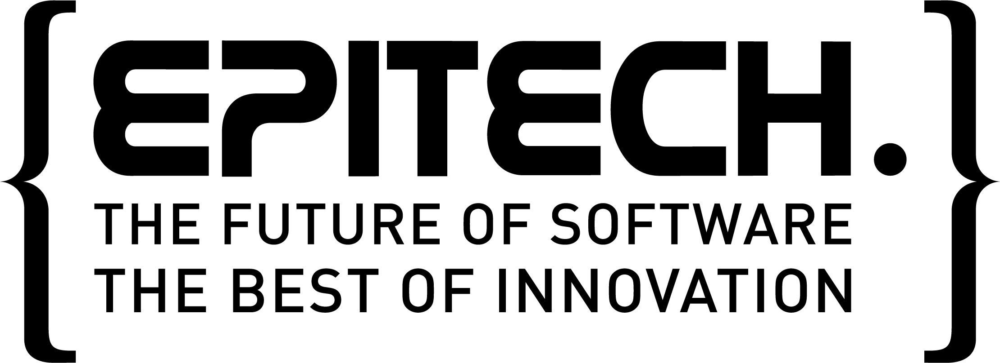

Education
To get my master in Computer Science and Information Technology, I studied for five years at Epitech, including one year abroad, at The Hague University of Applied Sciences, in the Netherlands.
I started my studies at Epitech in 2013. This school has a specific trainging method based on an innovative model which emphasizes three qualities which are increasingly sought after: adaptability, self-progression and a sense of project.
Through my five years at Epitech, I got to learn to use the C and C++ language, but I also got to work as an intern for 24 months. I had the opportunity to start working as a teaching assistant at the end of my first year of studies. This was one of the best experience I had: I got to teach and to explain my knowledge to help other students. More than technical skills, I got to improve my communication and organisation skills which are essential for professionals.
My main project at Epitech was a two-year long project named alayoo. This project was based on collaborative tourism and its purpose was to connect people to share knowledge about places. I got to create the full back-end, meaning I developed an API in Go, using PostgreSQL and Elasticsearch to store and index the data. I also created a complete documentation based on Slate so the other 5 developers could use the API as easily as possible. On a soft skill side, this project has been done completely remotely, across multiple time zones.
 In 2016-2017, I spent one year at The Hague University of Applied Sciences. This university uses the same pedagogical scheme as Epitech, which is a project-based training method. This year abroad was the perfect opportunity to discover a new culture but also to learn more about unfamiliar subjects: I learned a lot about Service Design and Sustainable Design, and I co-wrote a paper about Natural Language Processing. You can find it here (it sure is outdated as it's a constantly evolving field but it might interest you).
In 2016-2017, I spent one year at The Hague University of Applied Sciences. This university uses the same pedagogical scheme as Epitech, which is a project-based training method. This year abroad was the perfect opportunity to discover a new culture but also to learn more about unfamiliar subjects: I learned a lot about Service Design and Sustainable Design, and I co-wrote a paper about Natural Language Processing. You can find it here (it sure is outdated as it's a constantly evolving field but it might interest you).
I also got time to make research and to write my first essay regarding Women in Technology / Gender diversity. It's available here. I would love to discuss about it with you, so feel free to reach me!
Finally, I collaborated with a few other people, all of different nationalities, to create a mobile application focused on arts. I worked on the server side, put the website online and created the API in Python.